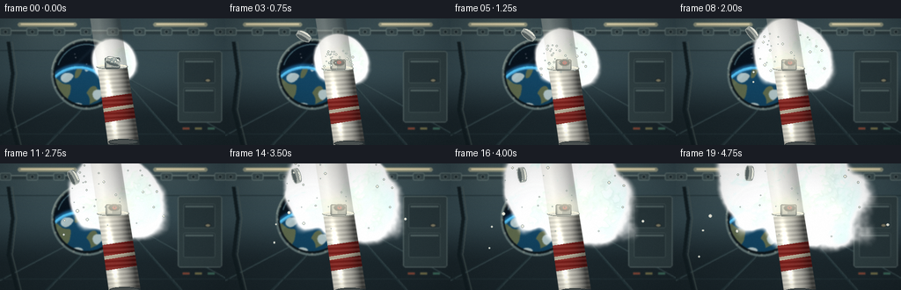
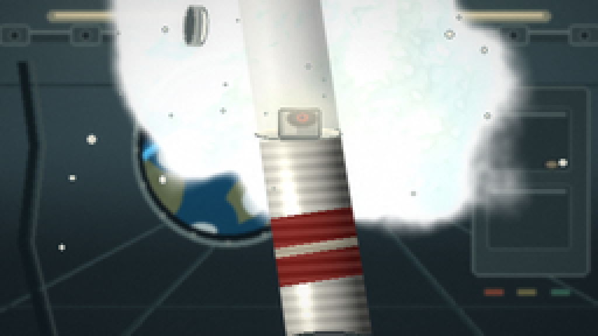
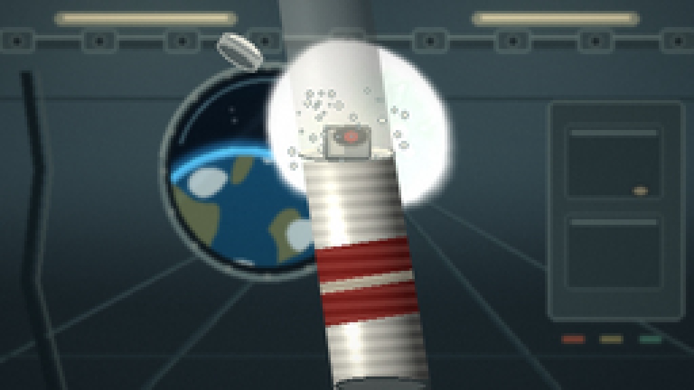
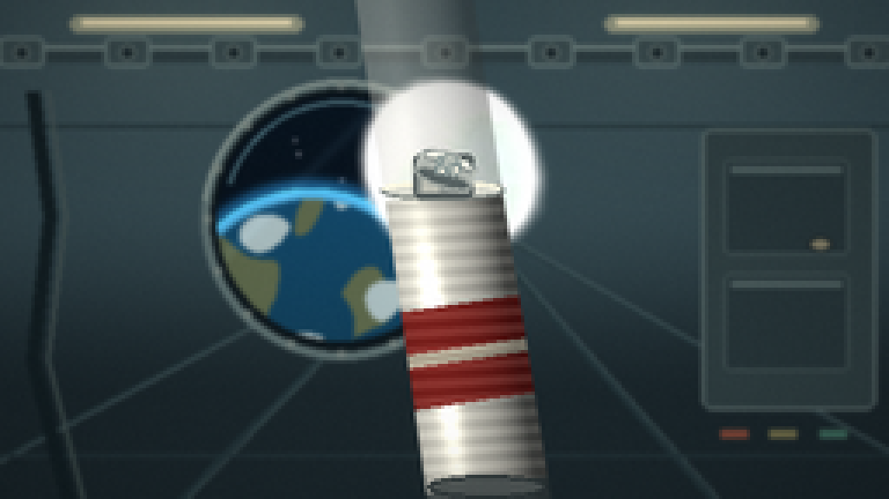
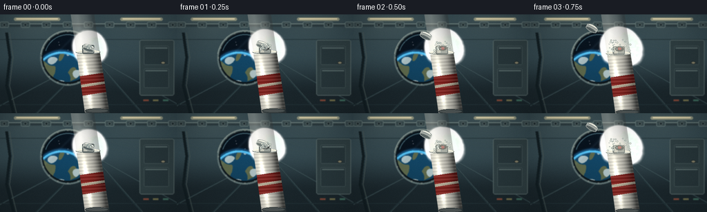
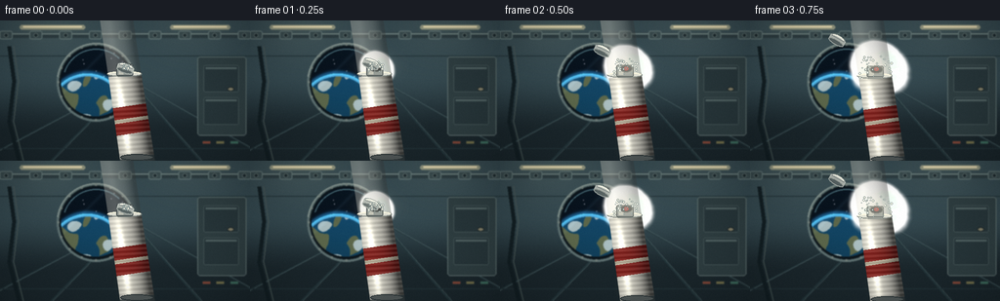
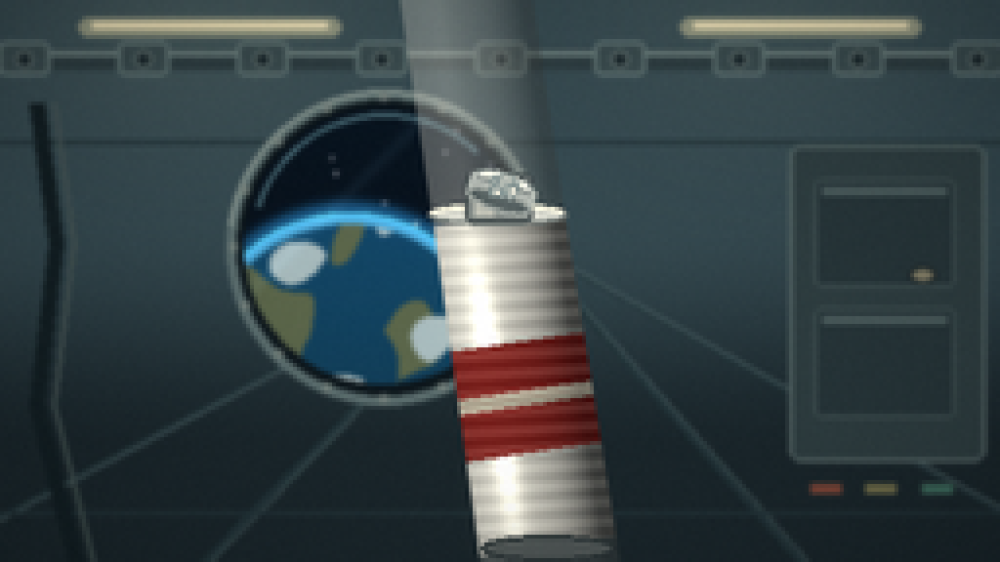
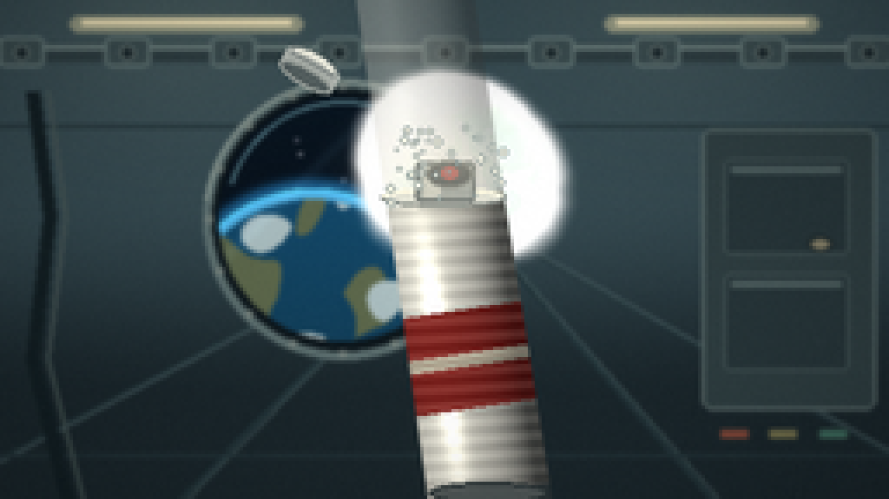
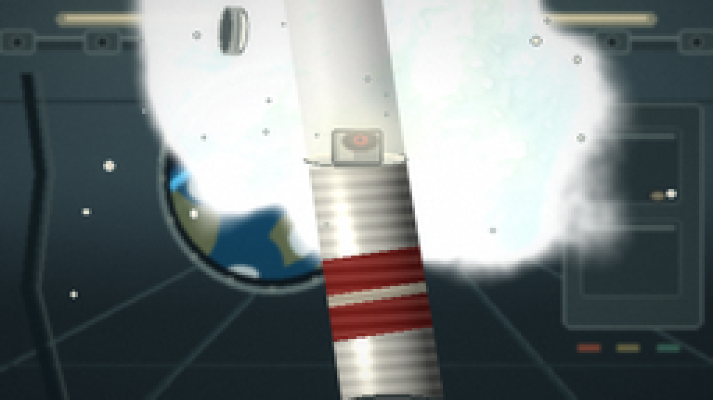

CODING AGENTS AS PIXEL WORLD MODELS
traex/DeepSeek-V4.1-Flash · mechanics_0006
点击播放 · 原生 RGB 像素
逐轮保存的候选
回放视频、检查图与代码变化。
每份候选均可单独播放。实际图片检查记录在下方工具轨迹中。
候选 01播放与检查图
点击播放 · 原生 RGB 像素

展开代码变化
--- 上一保存版本
+++ 本次保存版本
@@ -0,0 +1,685 @@
+from pathlib import Path
+import math
+
+import numpy as np
+from PIL import Image, ImageDraw, ImageFilter
+from scipy.ndimage import gaussian_filter
+
+import artifact_io
+
+
+CASE_DIR = Path(__file__).resolve().parent
+WIDTH = 256
+HEIGHT = 144
+FRAMES = 20
+FPS = 4.0
+SS = 2
+W = WIDTH * SS
+H = HEIGHT * SS
+
+
+def smoothstep(edge0, edge1, x):
+ t = np.clip((x - edge0) / (edge1 - edge0), 0.0, 1.0)
+ return t * t * (3.0 - 2.0 * t)
+
+
+def lerp(a, b, t):
+ return a + (b - a) * t
+
+
+def normalize(v, axis=-1):
+ length = np.sqrt(np.sum(v * v, axis=axis, keepdims=True)) + 1e-8
+ return v / length
+
+
+def camera_projection(point, zoom, sway):
+ x, y, z = point
+ focal = H * 1.18 * zoom
+ sx = W * 0.5 + focal * x / z + sway[0]
+ sy = H * 0.5 - focal * y / z + sway[1]
+ return np.array([sx, sy]), focal
+
+
+def draw_polyline(draw, points, fill, width):
+ pts = [(int(round(x)), int(round(y))) for x, y in points]
+ draw.line(pts, fill=fill, width=max(1, int(round(width))), joint="curve")
+
+
+def make_background(progress, zoom, sway):
+ yy, xx = np.mgrid[0:H, 0:W].astype(np.float32)
+ yn = yy / (H - 1)
+ xn = xx / (W - 1)
+
+ # Cool station wall with a darker deck below the horizon.
+ top = np.array([53.0, 72.0, 78.0])
+ bottom = np.array([26.0, 36.0, 40.0])
+ horizon = smoothstep(0.38, 0.82, yn)
+ img = top[None, None, :] * (1.0 - horizon[:, :, None])
+ img += bottom[None, None, :] * horizon[:, :, None]
+
+ # Soft pools of light from the overhead strips.
+ for lx, strength in ((0.20, 0.72), (0.77, 0.52)):
+ glow = np.exp(-(((xn - lx) / 0.19) ** 2 + ((yn - 0.02) / 0.25) ** 2))
+ img += strength * 24.0 * glow[:, :, None] * np.array([0.92, 0.88, 0.72])
+
+ vp_x = W * 0.52 + sway[0] * 0.35
+ vp_y = H * 0.43 + sway[1] * 0.35
+
+ base = Image.fromarray(np.clip(img, 0, 255).astype(np.uint8), "RGB")
+ draw = ImageDraw.Draw(base)
+
+ # Long perspective seams make the room read as a pressurized module.
+ seam = (34, 50, 54)
+ light_seam = (91, 112, 114)
+ for edge_x in (-W * 0.15, W * 0.17, W * 0.83, W * 1.15):
+ draw_polyline(draw, [(edge_x, H * 1.06), (vp_x, vp_y)], seam, 3)
+ draw_polyline(draw, [(edge_x + 4, H * 1.06), (vp_x + 2, vp_y)], light_seam, 1)
+ for edge_y in (H * 0.10, H * 0.25, H * 0.91):
+ draw_polyline(draw, [(0, edge_y), (W, edge_y)], (35, 50, 54), 2)
+
+ # Overhead utility rail and repeated recessed clamps.
+ rail_y = H * 0.105
+ draw.rectangle([0, int(rail_y - 5), W, int(rail_y + 5)], fill=(46, 60, 63))
+ draw.rectangle([0, int(rail_y - 4), W, int(rail_y - 2)], fill=(112, 130, 128))
+ for cx in np.linspace(12, W - 12, 9):
+ draw.rounded_rectangle(
+ [int(cx - 13), int(rail_y - 9), int(cx + 13), int(rail_y + 8)],
+ radius=4,
+ fill=(59, 75, 77),
+ outline=(103, 122, 121),
+ width=2,
+ )
+ draw.ellipse(
+ [int(cx - 4), int(rail_y - 4), int(cx + 4), int(rail_y + 4)],
+ fill=(28, 39, 42),
+ outline=(125, 139, 135),
+ width=1,
+ )
+
+ # Ceiling luminaires.
+ for x0, x1 in ((W * 0.08, W * 0.34), (W * 0.68, W * 0.92)):
+ draw.rounded_rectangle(
+ [int(x0), int(H * 0.032), int(x1), int(H * 0.065)],
+ radius=5,
+ fill=(151, 155, 132),
+ )
+ draw.rectangle(
+ [int(x0 + 7), int(H * 0.041), int(x1 - 7), int(H * 0.052)],
+ fill=(241, 229, 188),
+ )
+
+ # Right-hand service locker, deliberately low contrast.
+ locker = [int(W * 0.79), int(H * 0.26), int(W * 0.985), int(H * 0.82)]
+ draw.rounded_rectangle(locker, radius=6, fill=(47, 61, 63), outline=(91, 107, 106), width=2)
+ for y0, y1 in ((0.32, 0.51), (0.55, 0.74)):
+ box = [
+ int(W * 0.815),
+ int(H * y0),
+ int(W * 0.955),
+ int(H * y1),
+ ]
+ draw.rounded_rectangle(box, radius=3, fill=(39, 52, 55), outline=(82, 98, 98), width=1)
+ draw.rectangle([box[0] + 4, box[1] + 4, box[2] - 4, box[1] + 7], fill=(82, 99, 98))
+ draw.ellipse(
+ [int(W * 0.91), int(H * 0.475), int(W * 0.936), int(H * 0.505)],
+ fill=(134, 128, 104),
+ outline=(30, 39, 40),
+ width=2,
+ )
+
+ # Two insulated hoses on the left edge.
+ for offset, color in ((0, (18, 28, 31)), (9, (74, 87, 85))):
+ draw_polyline(
+ draw,
+ [(W * 0.035 + offset, H * 0.18), (W * 0.055 + offset, H * 0.43),
+ (W * 0.035 + offset, H * 0.72), (W * 0.075 + offset, H)],
+ color,
+ 8 if offset == 0 else 2,
+ )
+
+ # Porthole with a visible Earth limb.
+ window_center, focal = camera_projection((-0.49, 0.13, 2.82), zoom, sway)
+ wr = focal * 0.59 / 2.82
+ wcx, wcy = window_center
+ outer = [wcx - wr - 9, wcy - wr - 9, wcx + wr + 9, wcy + wr + 9]
+ draw.ellipse(outer, fill=(26, 35, 38), outline=(93, 111, 111), width=5)
+ draw.arc(outer, 188, 348, fill=(151, 165, 157), width=2)
+ draw.ellipse([wcx - wr - 3, wcy - wr - 3, wcx + wr + 3, wcy + wr + 3], fill=(12, 19, 23))
+
+ # Rivets around the porthole.
+ for angle in np.linspace(0, 2 * math.pi, 16, endpoint=False):
+ rx = wcx + (wr + 6) * math.cos(angle)
+ ry = wcy + (wr + 6) * math.sin(angle)
+ draw.ellipse([rx - 2, ry - 2, rx + 2, ry + 2], fill=(116, 128, 123))
+
+ # Window content is painted in its own image, then clipped to the glass.
+ glass_size = int(2 * wr + 6)
+ gx0 = int(wcx - glass_size / 2)
+ gy0 = int(wcy - glass_size / 2)
+ gy, gxx = np.mgrid[0:glass_size, 0:glass_size].astype(np.float32)
+ gxn = gxx / max(1, glass_size - 1)
+ gyn = gy / max(1, glass_size - 1)
+ space = np.zeros((glass_size, glass_size, 3), dtype=np.float32)
+ space[:] = np.array([5.0, 10.0, 17.0])
+ space += (18.0 * (1.0 - gyn))[:, :, None] * np.array([0.18, 0.45, 0.62])
+ rng_stars = np.random.default_rng(41)
+ for _ in range(22):
+ sx = int(rng_stars.uniform(2, glass_size - 2))
+ sy = int(rng_stars.uniform(2, glass_size * 0.58))
+ b = int(rng_stars.uniform(100, 220))
+ space[max(0, sy - 1):sy + 1, max(0, sx - 1):sx + 1] = (b, b, min(255, b + 12))
+
+ earth_cx = glass_size * 0.38
+ earth_cy = glass_size * 0.92
+ earth_r = glass_size * 0.54
+ dx = gxx - earth_cx
+ dy = gy - earth_cy
+ er = np.sqrt(dx * dx + dy * dy) / earth_r
+ earth_mask = er < 1.0
+ ocean = np.zeros_like(space)
+ ocean[:] = np.array([17.0, 61.0, 87.0])
+ ocean += (28.0 * (1.0 - gyn))[:, :, None] * np.array([0.12, 0.55, 0.90])
+ continents = (
+ np.sin(gxx * 0.075 + 0.7) * np.cos(gy * 0.061 - 0.8)
+ + 0.55 * np.sin(gxx * 0.035 - gy * 0.054)
+ + 0.30 * np.cos(gxx * 0.13 + gy * 0.07)
+ )
+ land = (continents > 0.47) & earth_mask & (er > 0.32)
+ ocean[land] = np.array([92.0, 102.0, 73.0])
+ cloud_band = (
+ np.sin(gxx * 0.045 + gy * 0.078)
+ + 0.5 * np.cos(gxx * 0.11 - gy * 0.037)
+ + 0.25 * np.sin(gy * 0.18)
+ )
+ clouds = earth_mask & (cloud_band > 1.02)
+ ocean[clouds] = np.array([170.0, 188.0, 190.0])
+ rim = earth_mask & (er > 0.92)
+ ocean[rim] = np.array([77.0, 163.0, 204.0])
+ space[earth_mask] = ocean[earth_mask]
+
+ # Blue atmospheric halo and a restrained reflection on the glass.
+ halo = np.exp(-((er - 1.02) / 0.055) ** 2)
+ space += halo[:, :, None] * np.array([20.0, 72.0, 105.0])
+ reflection = np.exp(-((gxn + gyn - 0.70) / 0.035) ** 2) * 13.0
+ space += reflection[:, :, None] * np.array([0.55, 0.75, 0.88])
+ glass_img = Image.fromarray(np.clip(space, 0, 255).astype(np.uint8), "RGB")
+ mask = Image.new("L", (glass_size, glass_size), 0)
+ ImageDraw.Draw(mask).ellipse([3, 3, glass_size - 4, glass_size - 4], fill=255)
+ base.paste(glass_img, (gx0, gy0), mask)
+
+ # Glass sheen and a small inner shadow.
+ draw = ImageDraw.Draw(base)
+ draw.arc(
+ [wcx - wr + 3, wcy - wr + 3, wcx + wr - 3, wcy + wr - 3],
+ 198,
+ 314,
+ fill=(87, 126, 137),
+ width=2,
+ )
+
+ # A muted status strip under the locker.
+ status_y = int(H * 0.86)
+ for i, color in enumerate(((130, 69, 54), (116, 111, 74), (61, 107, 92))):
+ sx = int(W * (0.81 + i * 0.055))
+ draw.rounded_rectangle(
+ [sx, status_y, sx + int(W * 0.034), status_y + int(H * 0.023)],
+ radius=2,
+ fill=color,
+ outline=(34, 44, 45),
+ width=1,
+ )
+
+ background = base.filter(ImageFilter.GaussianBlur(1.15))
+ return np.asarray(background, dtype=np.float32)
+
+
+def draw_cap_sprite():
+ sw, sh = int(W * 0.105), int(H * 0.095)
+ sprite = Image.new("RGBA", (sw, sh), (0, 0, 0, 0))
+ d = ImageDraw.Draw(sprite)
+ top = [sw * 0.18, sh * 0.20, sw * 0.82, sh * 0.62]
+ d.ellipse(top, fill=(208, 211, 203, 255), outline=(112, 122, 120, 255), width=2)
+ d.rectangle(
+ [sw * 0.18, sh * 0.40, sw * 0.82, sh * 0.78],
+ fill=(178, 184, 178, 255),
+ )
+ d.ellipse(
+ [sw * 0.18, sh * 0.59, sw * 0.82, sh * 0.93],
+ fill=(88, 98, 98, 255),
+ outline=(153, 160, 155, 255),
+ width=2,
+ )
+ d.arc(
+ [sw * 0.24, sh * 0.24, sw * 0.77, sh * 0.57],
+ 194,
+ 334,
+ fill=(247, 247, 232, 255),
+ width=3,
+ )
+ d.rectangle(
+ [sw * 0.24, sh * 0.42, sw * 0.76, sh * 0.47],
+ fill=(143, 150, 147, 255),
+ )
+ return sprite
+
+
+def blend_sprite(canvas, sprite, center, angle):
+ rotated = sprite.rotate(angle, resample=Image.Resampling.BICUBIC, expand=True)
+ x0 = int(center[0] - rotated.width / 2)
+ y0 = int(center[1] - rotated.height / 2)
+ canvas.alpha_composite(rotated, (x0, y0))
+
+
+def draw_can(canvas, emitter, top_center, bottom_center, body_radius, time_s):
+ yy, xx = np.mgrid[0:H, 0:W].astype(np.float32)
+ axis = top_center - bottom_center
+ axis_len2 = float(np.dot(axis, axis))
+ rel = np.stack([xx - bottom_center[0], yy - bottom_center[1]], axis=-1)
+ t = np.clip((rel[:, :, 0] * axis[0] + rel[:, :, 1] * axis[1]) / axis_len2, 0.0, 1.0)
+ proj_x = bottom_center[0] + t * axis[0]
+ proj_y = bottom_center[1] + t * axis[1]
+ s = (xx - proj_x) * (-axis[1]) / math.sqrt(axis_len2)
+ s += (yy - proj_y) * axis[0] / math.sqrt(axis_len2)
+ q = np.clip(s / body_radius, -1.0, 1.0)
+
+ # Slightly tapered cylinder, with soft antialiased sides.
+ taper = 1.0 - 0.045 * t
+ body_alpha = smoothstep(1.015, 0.965, np.abs(s) / (body_radius * taper))
+ body_alpha *= smoothstep(-0.01, 0.018, t) * smoothstep(1.01, 0.985, t)
+
+ nz = np.sqrt(np.clip(1.0 - q * q, 0.0, 1.0))
+ nx = q
+ light = normalize(np.array([-0.52, -0.56, 0.66]))
+ ndotl = np.clip(nx * light[0] + nz * light[2], 0.0, 1.0)
+ diffuse = 0.44 + 0.62 * ndotl
+ spec_band = np.exp(-((q + 0.43) / 0.18) ** 2)
+ vertical_glint = np.exp(-((t - 0.47) / 0.38) ** 2)
+ spec = 0.48 * spec_band * vertical_glint
+ right_shadow = 0.13 * smoothstep(0.18, 0.98, q)
+
+ can_rgb = np.zeros((H, W, 3), dtype=np.float32)
+ base_col = np.array([222.0, 220.0, 209.0])
+ can_rgb[:] = base_col[None, None, :] * (diffuse - right_shadow)[:, :, None]
+ can_rgb += spec[:, :, None] * np.array([255.0, 249.0, 224.0])
+
+ # Dark red product band and a narrow ivory stripe.
+ band = (t > 0.29) & (t < 0.62)
+ band_light = 0.56 + 0.34 * ndotl - right_shadow * 0.55
+ red = np.array([157.0, 48.0, 42.0])
+ can_rgb[band] = red[None, :] * band_light[band, None]
+ stripe = band & (t > 0.43) & (t < 0.475)
+ can_rgb[stripe] = np.array([226.0, 215.0, 190.0])[None, :] * band_light[stripe, None]
+
+ # Fine horizontal ribs and a satin metal sheen.
+ rib_phase = ((t * 23.0) % 1.0) - 0.5
+ ribs = np.exp(-(rib_phase / 0.08) ** 2) * 6.0
+ can_rgb -= ribs[:, :, None] * np.array([0.50, 0.55, 0.58])
+ can_rgb += (0.06 * np.sin(t * 110.0 + q * 2.0))[:, :, None] * base_col
+
+ alpha = body_alpha[:, :, None]
+ rgba = np.dstack([np.clip(can_rgb, 0, 255), alpha * 255.0]).astype(np.uint8)
+ layer = Image.fromarray(rgba, "RGBA")
+ canvas.alpha_composite(layer)
+
+ draw = ImageDraw.Draw(canvas)
+
+ # Rounded top and bottom ellipses.
+ top_w = body_radius * 2.0
+ top_ellipse = [
+ top_center[0] - top_w * 0.5,
+ top_center[1] - body_radius * 0.15,
+ top_center[0] + top_w * 0.5,
+ top_center[1] + body_radius * 0.16,
+ ]
+ draw.ellipse(top_ellipse, fill=(214, 215, 205), outline=(112, 120, 117), width=2)
+ draw.arc(top_ellipse, 192, 342, fill=(246, 242, 221), width=3)
+
+ bottom_w = body_radius * 2.0 * (1.0 - 0.045)
+ bottom_ellipse = [
+ bottom_center[0] - bottom_w * 0.5,
+ bottom_center[1] - body_radius * 0.18,
+ bottom_center[0] + bottom_w * 0.5,
+ bottom_center[1] + body_radius * 0.18,
+ ]
+ draw.ellipse(bottom_ellipse, fill=(81, 87, 86), outline=(41, 49, 50), width=2)
+
+ # Short silver neck and black actuator.
+ neck_w = body_radius * 0.48
+ neck_top = top_center[1] - body_radius * 0.58
+ draw.rounded_rectangle(
+ [top_center[0] - neck_w, neck_top, top_center[0] + neck_w, top_center[1] + 3],
+ radius=max(2, int(neck_w * 0.22)),
+ fill=(139, 146, 142),
+ outline=(67, 75, 76),
+ width=2,
+ )
+ draw.rectangle(
+ [top_center[0] - neck_w * 0.68, neck_top + 3, top_center[0] - neck_w * 0.15, top_center[1]],
+ fill=(190, 191, 180),
+ )
+ draw.ellipse(
+ [
+ emitter[0] - body_radius * 0.37,
+ emitter[1] - body_radius * 0.22,
+ emitter[0] + body_radius * 0.37,
+ emitter[1] + body_radius * 0.22,
+ ],
+ fill=(41, 45, 46),
+ outline=(96, 101, 98),
+ width=2,
+ )
+ draw.ellipse(
+ [
+ emitter[0] - body_radius * 0.13,
+ emitter[1] - body_radius * 0.10,
+ emitter[0] + body_radius * 0.13,
+ emitter[1] + body_radius * 0.10,
+ ],
+ fill=(148, 45, 42),
+ )
+
+ # Ejected protective cap: the opening is clear by the first second.
+ lift = smoothstep(0.08, 0.82, time_s)
+ cap_center = np.array(
+ [
+ emitter[0] - 44.0 * SS * lift + 4.0 * SS * math.sin(time_s * 1.3),
+ emitter[1] - 30.0 * SS * lift - 2.0 * SS * time_s,
+ ]
+ )
+ cap = draw_cap_sprite()
+ blend_sprite(canvas, cap, cap_center, -18.0 - 16.0 * time_s)
+
+
+def projected_blob_field(blobs, zoom, sway, texture):
+ density = np.zeros((H, W), dtype=np.float32)
+ depth_acc = np.zeros((H, W), dtype=np.float32)
+ weight_acc = np.zeros((H, W), dtype=np.float32)
+
+ for blob in blobs:
+ center, focal = camera_projection(blob["pos"], zoom, sway)
+ z = blob["pos"][2]
+ sigma = max(0.8, blob["radius"] * focal / z)
+ sx = sigma * blob["aspect"]
+ sy = sigma / blob["aspect"]
+ angle = blob["angle"]
+ ca, sa = math.cos(angle), math.sin(angle)
+ reach = int(max(sx, sy) * 3.0 + 3)
+ x0 = max(0, int(center[0]) - reach)
+ x1 = min(W, int(center[0]) + reach + 1)
+ y0 = max(0, int(center[1]) - reach)
+ y1 = min(H, int(center[1]) + reach + 1)
+ if x0 >= x1 or y0 >= y1:
+ continue
+ yy, xx = np.mgrid[y0:y1, x0:x1].astype(np.float32)
+ dx = xx - center[0]
+ dy = yy - center[1]
+ u = (ca * dx + sa * dy) / sx
+ v = (-sa * dx + ca * dy) / sy
+ g = blob["amp"] * np.exp(-0.5 * (u * u + v * v))
+ density[y0:y1, x0:x1] += g
+ depth_acc[y0:y1, x0:x1] += g * z
+ weight_acc[y0:y1, x0:x1] += g
+
+ safe = np.maximum(weight_acc, 1e-5)
+ depth = depth_acc / safe
+ # Microstructure makes the mass feel aerated rather than like smooth fog.
+ density *= 0.86 + 0.22 * texture
+ return density, depth
+
+
+def make_foam_texture(frame_index):
+ rng = np.random.default_rng(900 + frame_index * 17)
+ field = np.zeros((H, W), dtype=np.float32)
+ amplitude = 1.0
+ total = 0.0
+ for sigma in (35.0, 16.0, 7.0, 3.0):
+ raw = rng.normal(size=(H, W)).astype(np.float32)
+ field += amplitude * gaussian_filter(raw, sigma=sigma, mode="reflect")
+ total += amplitude
+ amplitude *= 0.62
+ field /= total
+ field = (field - field.mean()) / (field.std() + 1e-6)
+ field = np.clip(0.5 + 0.20 * field, 0.05, 0.95)
+ shift_x = int(round(frame_index * 1.7 * SS))
+ shift_y = int(round(-frame_index * 1.1 * SS))
+ return np.roll(field, (shift_y, shift_x), axis=(0, 1))
+
+
+def build_cream_blobs(time_s, emitter_world):
+ rng = np.random.default_rng(20261111)
+ blobs = []
+ n_main = 112
+ expansion = 1.0 - math.exp(-time_s / 1.45)
+ for i in range(n_main):
+ # Spherical directions, with a gentle upward bias because the jet exits upward.
+ v = rng.normal(size=3)
+ v /= np.linalg.norm(v) + 1e-8
+ v[1] = 0.66 * v[1] + 0.34
+ v = v / (np.linalg.norm(v) + 1e-8)
+ radial_speed = rng.uniform(0.050, 0.092)
+ start = rng.uniform(0.002, 0.012)
+ travel = start + radial_speed * time_s * (0.55 + 0.45 * expansion)
+ wobble = np.array(
+ [
+ 0.012 * math.sin(2.1 * time_s + i * 0.71),
+ 0.007 * math.cos(1.7 * time_s + i * 0.53),
+ 0.009 * math.sin(1.4 * time_s + i * 0.37),
+ ]
+ )
+ pos = np.asarray(emitter_world) + v * travel + wobble
+ pos[1] += 0.008 * time_s
+ pos[2] += rng.uniform(-0.055, 0.075)
+ radius = rng.uniform(0.031, 0.057) * (0.68 + 0.48 * expansion)
+ if i < 22:
+ radius *= 1.20
+ blobs.append(
+ {
+ "pos": pos,
+ "radius": radius,
+ "amp": rng.uniform(0.48, 1.02),
+ "aspect": rng.uniform(0.78, 1.22),
+ "angle": rng.uniform(0, math.pi),
+ }
+ )
+
+ # A slower central column keeps the mass connected to the nozzle.
+ for i in range(28):
+ angle = rng.uniform(0, 2 * math.pi)
+ radius_xy = rng.uniform(0.0, 0.055) * expansion
+ pos = np.array(
+ [
+ emitter_world[0] + radius_xy * math.cos(angle),
+ emitter_world[1] + 0.014 + rng.uniform(0.02, 0.13) * expansion,
+ emitter_world[2] + rng.uniform(-0.035, 0.04),
+ ]
+ )
+ blobs.append(
+ {
+ "pos": pos,
+ "radius": rng.uniform(0.040, 0.063) * (0.72 + 0.38 * expansion),
+ "amp": rng.uniform(0.72, 1.18),
+ "aspect": rng.uniform(0.84, 1.16),
+ "angle": rng.uniform(0, math.pi),
+ }
+ )
+
+ # A few translucent outer wisps make the boundary airy.
+ for i in range(24):
+ v = rng.normal(size=3)
+ v /= np.linalg.norm(v) + 1e-8
+ v[1] = 0.48 * v[1] + 0.25
+ v = v / (np.linalg.norm(v) + 1e-8)
+ travel = 0.025 + rng.uniform(0.070, 0.115) * time_s
+ pos = np.asarray(emitter_world) + v * travel
+ pos[2] += rng.uniform(-0.06, 0.06)
+ blobs.append(
+ {
+ "pos": pos,
+ "radius": rng.uniform(0.050, 0.080),
+ "amp": rng.uniform(0.15, 0.32),
+ "aspect": rng.uniform(0.70, 1.30),
+ "angle": rng.uniform(0, math.pi),
+ }
+ )
+ return blobs
+
+
+def render_foam(base, time_s, frame_index, zoom, sway, emitter_world):
+ blobs = build_cream_blobs(time_s, emitter_world)
+ texture = make_foam_texture(frame_index)
+ density, depth = projected_blob_field(blobs, zoom, sway, texture)
+
+ smooth_density = gaussian_filter(density, sigma=1.15)
+ gy, gx = np.gradient(smooth_density)
+ scale = 2.4
+ normal = normalize(np.stack([-gx * scale, -gy * scale, np.ones_like(gx) * 0.82], axis=-1))
+ light = normalize(np.array([-0.54, -0.64, 0.62]))
+ ndotl = np.clip(np.sum(normal * light[None, None, :], axis=-1), 0.0, 1.0)
+ half_vec = normalize(light + np.array([0.0, 0.0, 1.0]))
+ ndoth = np.clip(np.sum(normal * half_vec[None, None, :], axis=-1), 0.0, 1.0)
+
+ alpha = smoothstep(0.16, 0.46, smooth_density)
+ edge = smoothstep(0.10, 0.30, smooth_density) * (1.0 - smoothstep(0.32, 0.65, smooth_density))
+ far = smoothstep(1.12, 0.92, depth)
+
+ shadow_col = np.array([151.0, 166.0, 166.0])
+ mid_col = np.array([226.0, 224.0, 211.0])
+ warm_col = np.array([250.0, 244.0, 221.0])
+ color = shadow_col[None, None, :] * (1.0 - ndotl[:, :, None] * 0.54)
+ color += mid_col[None, None, :] * (0.42 + 0.28 * ndotl[:, :, None])
+ color += warm_col[None, None, :] * (0.20 * ndotl[:, :, None] ** 2)
+ color += (0.20 * ndoth ** 12 + 0.09 * ndoth ** 35)[:, :, None] * np.array([255.0, 250.0, 231.0])
+ color += edge[:, :, None] * np.array([22.0, 32.0, 33.0])
+ color -= far[:, :, None] * np.array([18.0, 10.0, 4.0])
+
+ # Tiny bubble shadows in the densest areas, with bright adjacent glints.
+ bubbles = np.clip((texture - 0.54) * 4.8, 0.0, 1.0)
+ dense = smoothstep(0.45, 1.20, smooth_density)
+ color -= (bubbles * dense * 12.0)[:, :, None] * np.array([0.58, 0.65, 0.68])
+ glints = smoothstep(0.72, 0.92, texture) * dense
+ color += (glints * 16.0)[:, :, None] * np.array([0.95, 0.96, 0.90])
+
+ # Slight cool bounce from the station walls on the underside.
+ lower = smoothstep(0.52, 0.95, np.linspace(0, 1, H))[:, None]
+ color = color * (1.0 - lower[:, :, None] * 0.06) + lower[:, :, None] * np.array([147.0, 175.0, 183.0]) * 0.06
+
+ foam_layer = np.dstack([np.clip(color, 0, 255), np.clip(alpha * 248.0, 0, 255)]).astype(np.uint8)
+ base.alpha_composite(Image.fromarray(foam_layer, "RGBA"))
+ return base, density
+
+
+def add_droplets(canvas, time_s, zoom, sway, emitter_world):
+ rng = np.random.default_rng(771)
+ draw = ImageDraw.Draw(canvas)
+ for i in range(34):
+ v = rng.normal(size=3)
+ v /= np.linalg.norm(v) + 1e-8
+ v[1] = 0.5 * v[1] + 0.22
+ v /= np.linalg.norm(v) + 1e-8
+ speed = rng.uniform(0.075, 0.135)
+ pos = np.asarray(emitter_world) + v * (0.018 + speed * time_s)
+ pos[2] += rng.uniform(-0.06, 0.07)
+ center, focal = camera_projection(pos, zoom, sway)
+ radius = max(1.0, rng.uniform(0.003, 0.008) * focal / pos[2])
+ if not (-radius < center[0] < W + radius and -radius < center[1] < H + radius):
+ continue
+ bbox = [center[0] - radius, center[1] - radius, center[0] + radius, center[1] + radius]
+ draw.ellipse(bbox, fill=(235, 232, 217), outline=(121, 139, 140), width=1)
+ if radius > 2.4:
+ draw.ellipse(
+ [
+ center[0] - radius * 0.45,
+ center[1] - radius * 0.55,
+ center[0] + radius * 0.05,
+ center[1] - radius * 0.08,
+ ],
+ fill=(255, 250, 232),
+ )
+
+
+def post_process(rgb, frame_index):
+ rgb = rgb.astype(np.float32)
+ bright = np.clip(rgb - 176.0, 0.0, None)
+ bloom = gaussian_filter(bright, sigma=(6.5, 6.5, 0.0))
+ rgb = rgb + bloom * 0.22
+
+ yy, xx = np.mgrid[0:H, 0:W].astype(np.float32)
+ xn = (xx / (W - 1) - 0.5) * 2.0
+ yn = (yy / (H - 1) - 0.5) * 2.0
+ vignette = np.clip(1.0 - 0.18 * (xn * xn * 0.85 + yn * yn * 0.65), 0.74, 1.0)
+ rgb *= vignette[:, :, None]
+
+ # Lift the shadows toward cool blue and keep the cream highlights warm.
+ shadow_lift = np.clip((150.0 - rgb.mean(axis=2)) / 150.0, 0.0, 1.0)
+ rgb += shadow_lift[:, :, None] * np.array([1.5, 4.0, 5.5])
+ rgb = np.clip(rgb, 0, 255)
+
+ rng = np.random.default_rng(3300 + frame_index)
+ grain = rng.normal(0.0, 1.25, size=(H, W, 1)).astype(np.float32)
+ rgb += grain
+ return rgb
+
+
+def render_frame(frame_index):
+ time_s = frame_index / FPS
+ progress = frame_index / (FRAMES - 1)
+ zoom = 1.0 + 0.035 * smoothstep(0.0, 1.0, progress)
+ sway = np.array(
+ [
+ 1.2 * SS * math.sin(progress * math.pi * 0.85),
+ -0.7 * SS * math.cos(progress * math.pi * 0.65),
+ ]
+ )
+
+ background = make_background(progress, zoom, sway)
+ canvas = Image.fromarray(np.clip(background, 0, 255).astype(np.uint8), "RGB").convert("RGBA")
+
+ # A small recoil is visible as the pressure escapes.
+ recoil = 0.012 * smoothstep(0.12, 0.9, time_s)
+ emitter_world = np.array([0.006, 0.147 - recoil, 1.095])
+ top_world = np.array([-0.004, 0.105 - recoil, 1.095])
+ bottom_world = np.array([0.078, -0.445 - recoil, 1.095])
+ emitter, focal = camera_projection(emitter_world, zoom, sway)
+ top_center, _ = camera_projection(top_world, zoom, sway)
+ bottom_center, _ = camera_projection(bottom_world, zoom, sway)
+ body_radius = focal * 0.115 / 1.095
+
+ canvas, density = render_foam(canvas, time_s, frame_index, zoom, sway, emitter_world)
+
+ # The can is in the foreground, so foam behind it disappears naturally.
+ draw_can(canvas, emitter, top_center, bottom_center, body_radius, time_s)
+
+ # A bright collar at the nozzle ties the plume to the can.
+ collar_alpha = smoothstep(0.12, 0.42, time_s) * (0.45 + 0.30 * smoothstep(0.4, 2.4, time_s))
+ yy, xx = np.mgrid[0:H, 0:W].astype(np.float32)
+ collar = np.exp(
+ -0.5 * (((xx - emitter[0]) / (body_radius * 0.70)) ** 2 + ((yy - emitter[1] + body_radius * 0.10) / (body_radius * 0.45)) ** 2)
+ )
+ collar = collar * collar_alpha
+ collar_rgb = np.dstack(
+ [
+ np.full((H, W), 247.0),
+ np.full((H, W), 242.0),
+ np.full((H, W), 220.0),
+ np.clip(collar * 235.0, 0, 255),
+ ]
+ ).astype(np.uint8)
+ canvas.alpha_composite(Image.fromarray(collar_rgb, "RGBA"))
+
+ add_droplets(canvas, time_s, zoom, sway, emitter_world)
+
+ rgb = np.asarray(canvas.convert("RGB"), dtype=np.float32)
+ rgb = post_process(rgb, frame_index)
+ image = Image.fromarray(np.clip(rgb, 0, 255).astype(np.uint8), "RGB")
+ image = image.resize((WIDTH, HEIGHT), Image.Resampling.LANCZOS)
+ return np.asarray(image, dtype=np.uint8)
+
+
+def main():
+ frames = np.stack([render_frame(i) for i in range(FRAMES)], axis=0)
+ artifact_io.save(frames, CASE_DIR)
+ print(f"saved {frames.shape} at {FPS:g} fps to {CASE_DIR}")
+
+
+if __name__ == "__main__":
+ main()
候选 02播放与检查图
点击播放 · 原生 RGB 像素

展开代码变化
--- 上一保存版本
+++ 本次保存版本
@@ -449,7 +449,11 @@
rng = np.random.default_rng(20261111)
blobs = []
n_main = 112
- expansion = 1.0 - math.exp(-time_s / 1.45)
+ emission_time = max(0.0, time_s - 0.16)
+ if emission_time <= 0.0:
+ return blobs
+ expansion = 1.0 - math.exp(-emission_time / 1.38)
+ growth = smoothstep(0.0, 0.52, emission_time)
for i in range(n_main):
# Spherical directions, with a gentle upward bias because the jet exits upward.
v = rng.normal(size=3)
@@ -458,7 +462,7 @@
v = v / (np.linalg.norm(v) + 1e-8)
radial_speed = rng.uniform(0.050, 0.092)
start = rng.uniform(0.002, 0.012)
- travel = start + radial_speed * time_s * (0.55 + 0.45 * expansion)
+ travel = (start + radial_speed * emission_time * (0.62 + 0.38 * expansion)) * (0.58 + 0.42 * growth)
wobble = np.array(
[
0.012 * math.sin(2.1 * time_s + i * 0.71),
@@ -469,7 +473,7 @@
pos = np.asarray(emitter_world) + v * travel + wobble
pos[1] += 0.008 * time_s
pos[2] += rng.uniform(-0.055, 0.075)
- radius = rng.uniform(0.031, 0.057) * (0.68 + 0.48 * expansion)
+ radius = rng.uniform(0.031, 0.057) * (0.45 + 0.69 * expansion) * (0.58 + 0.42 * growth)
if i < 22:
radius *= 1.20
blobs.append(
@@ -489,14 +493,14 @@
pos = np.array(
[
emitter_world[0] + radius_xy * math.cos(angle),
- emitter_world[1] + 0.014 + rng.uniform(0.02, 0.13) * expansion,
+ emitter_world[1] + 0.014 + rng.uniform(0.02, 0.15) * expansion,
emitter_world[2] + rng.uniform(-0.035, 0.04),
]
)
blobs.append(
{
"pos": pos,
- "radius": rng.uniform(0.040, 0.063) * (0.72 + 0.38 * expansion),
+ "radius": rng.uniform(0.040, 0.063) * (0.58 + 0.48 * expansion) * (0.62 + 0.38 * growth),
"amp": rng.uniform(0.72, 1.18),
"aspect": rng.uniform(0.84, 1.16),
"angle": rng.uniform(0, math.pi),
@@ -509,13 +513,13 @@
v /= np.linalg.norm(v) + 1e-8
v[1] = 0.48 * v[1] + 0.25
v = v / (np.linalg.norm(v) + 1e-8)
- travel = 0.025 + rng.uniform(0.070, 0.115) * time_s
+ travel = (0.025 + rng.uniform(0.070, 0.115) * emission_time) * (0.62 + 0.38 * growth)
pos = np.asarray(emitter_world) + v * travel
pos[2] += rng.uniform(-0.06, 0.06)
blobs.append(
{
"pos": pos,
- "radius": rng.uniform(0.050, 0.080),
+ "radius": rng.uniform(0.050, 0.080) * (0.64 + 0.36 * growth),
"amp": rng.uniform(0.15, 0.32),
"aspect": rng.uniform(0.70, 1.30),
"angle": rng.uniform(0, math.pi),
@@ -526,6 +530,8 @@
def render_foam(base, time_s, frame_index, zoom, sway, emitter_world):
blobs = build_cream_blobs(time_s, emitter_world)
+ if not blobs:
+ return base, np.zeros((H, W), dtype=np.float32)
texture = make_foam_texture(frame_index)
density, depth = projected_blob_field(blobs, zoom, sway, texture)
@@ -538,7 +544,7 @@
half_vec = normalize(light + np.array([0.0, 0.0, 1.0]))
ndoth = np.clip(np.sum(normal * half_vec[None, None, :], axis=-1), 0.0, 1.0)
- alpha = smoothstep(0.16, 0.46, smooth_density)
+ alpha = smoothstep(0.12, 0.40, smooth_density)
edge = smoothstep(0.10, 0.30, smooth_density) * (1.0 - smoothstep(0.32, 0.65, smooth_density))
far = smoothstep(1.12, 0.92, depth)
@@ -549,14 +555,14 @@
color += mid_col[None, None, :] * (0.42 + 0.28 * ndotl[:, :, None])
color += warm_col[None, None, :] * (0.20 * ndotl[:, :, None] ** 2)
color += (0.20 * ndoth ** 12 + 0.09 * ndoth ** 35)[:, :, None] * np.array([255.0, 250.0, 231.0])
- color += edge[:, :, None] * np.array([22.0, 32.0, 33.0])
+ color += edge[:, :, None] * np.array([27.0, 38.0, 39.0])
color -= far[:, :, None] * np.array([18.0, 10.0, 4.0])
# Tiny bubble shadows in the densest areas, with bright adjacent glints.
- bubbles = np.clip((texture - 0.54) * 4.8, 0.0, 1.0)
+ bubbles = np.clip((texture - 0.59) * 5.2, 0.0, 1.0)
dense = smoothstep(0.45, 1.20, smooth_density)
- color -= (bubbles * dense * 12.0)[:, :, None] * np.array([0.58, 0.65, 0.68])
- glints = smoothstep(0.72, 0.92, texture) * dense
+ color -= (bubbles * dense * 9.0)[:, :, None] * np.array([0.58, 0.65, 0.68])
+ glints = smoothstep(0.76, 0.94, texture) * dense
color += (glints * 16.0)[:, :, None] * np.array([0.95, 0.96, 0.90])
# Slight cool bounce from the station walls on the underside.
候选 03播放与检查图
可观测工具轨迹
实际执行的命令与返回图片。
命令 1exit 0
/bin/bash -c "pwd && rg --files -g '"'!*__pycache__*'"' -g '"'!*.pyc'"' | sed -n '1,200p'"
命令 2exit 0
/bin/bash -c "sed -n '1,240p' prompt.txt"
命令 3exit 0
/bin/bash -c "sed -n '1,280p' GENERATION_RULES.md"
命令 4exit 0
/bin/bash -c 'cat task_spec.json'
命令 5exit 0
/bin/bash -c "sed -n '1,300p' artifact_io.py"
命令 6exit 0
/bin/bash -c "python - <<'PY'
import sys, numpy, PIL
print(sys.version)
print('numpy', numpy.__version__)
print('PIL', PIL.__version__)
try:
import scipy; print('scipy', scipy.__version__)
except Exception as e: print('no scipy', e)
PY"命令 7exit 0
/bin/bash -c 'python generate.py'
命令 8exit 0
/bin/bash -c "python - <<'PY'
from PIL import Image
for i in (0,4,9,14,19):
im=Image.open(f'frames/{i:02d}.png')
im.resize((1024,576), Image.Resampling.NEAREST).save(f'.tmp/frame_{i:02d}_nearest.png')
PY"命令 9exit 0
/bin/bash -c "python - <<'PY'
import numpy as np
from PIL import Image
from scipy.ndimage import gaussian_filter
frames=np.stack([np.asarray(Image.open(f'frames/{i:02d}.png'),dtype=np.float32) for i in range(20)])
for i in (0,4,9,14,19):
g=frames[i].mean(2)
# brightness in region above can, where foam expands
reg=g[10:70,70:210]
print(i, 'mean',g.mean(), 'std',g.std(), 'foam bright%', (reg>150).mean(), 'bright%',(g>180).mean())
for i in range(1,20):
print(i, np.abs(frames[i]-frames[i-1]).mean())
PY"命令 10exit 0
/bin/bash -c 'python generate.py'
命令 11exit 0
/bin/bash -c "python - <<'PY'
from PIL import Image
for i in (0,1,3,7,11,15,19):
im=Image.open(f'frames/{i:02d}.png')
im.resize((1024,576), Image.Resampling.NEAREST).save(f'.tmp/rev_{i:02d}.png')
PY"命令 12exit 1
/bin/bash -c "python - <<'PY'
import json
from pathlib import Path
import numpy as np
from PIL import Image
p=Path('.')
spec=json.loads((p/'task_spec.json').read_text())
with np.load(p/'pixels.npz') as z:
pix=z['pixels']
frames=np.stack([np.asarray(Image.open(p/'frames'/f'{i:02d}.png')) for i in range(spec['frames'])])
print('spec', spec)
print('pixels', pix.shape, pix.dtype, int(pix.min()), int(pix.max()))
print('frames', frames.shape, frames.dtype)
print('index.html', (p/'index.html').stat().st_size)
print('deltas', len(json.loads((p/'index.html').read_text().split('__DATA__')[0]) if False else []))
print('mean abs frame delta', float(np.abs(frames[1:].astype(np.int16)-frames[:-1].astype(np.int16)).mean()))
print('unique frames', len({f.tobytes() for f in frames}))
print('final nonblack', float((frames[-1].max(axis=3)>0).mean()))
PY"命令 13exit 1
/bin/bash -c "python - <<'PY'
import base64, json, re, hashlib
from pathlib import Path
import numpy as np
from PIL import Image
p=Path('.')
frames=np.stack([np.asarray(Image.open(p/'frames'/f'{i:02d}.png')) for i in range(20)])
with np.load(p/'pixels.npz') as z:
pix=z['pixels']
reconstructed=np.stack([((pix[:,:,i]>>16)&255).astype(np.uint8), ((pix[:,:,i]>>8)&255).astype(np.uint8), (pix[:,:,i]&255).astype(np.uint8)],axis=2)
reconstructed=reconstructed.transpose(0,2,1,3)
print('npz exact:', np.array_equal(frames,reconstructed))
html=(p/'index.html').read_text()
m=re.search(r'const DATA = (\\{.*?\\});', html, re.S)
if not m:
m=re.search(r'window.__DATA__ = (\\{.*?\\});', html, re.S)
if m:
data=json.loads(m.group(1))
print('html payload', data['width'], data['height'], data['frames'], data['fps'], len(data['deltas']))
else:
print('html contains payload markers', 'deltas' in html, 'caption' in html, 'frame 19' in html)
print('final nonblack', float((frames[-1].max(axis=2)>0).mean()))
print('output files:')
for name in ('generate.py','pixels.npz','index.html','inspection.png','transition_check.png'):
print(name, (p/name).stat().st_size)
PY"命令 14exit 0
/bin/bash -c "python - <<'PY'
import json, re
from pathlib import Path
import numpy as np
from PIL import Image
p=Path('.')
frames=np.stack([np.asarray(Image.open(p/'frames'/f'{i:02d}.png')) for i in range(20)])
with np.load(p/'pixels.npz') as z:
pix=z['pixels']
reconstructed=np.stack([
np.stack([((pix[:,:,i]>>16)&255).astype(np.uint8), ((pix[:,:,i]>>8)&255).astype(np.uint8), (pix[:,:,i]&255).astype(np.uint8)],axis=2)
for i in range(20)
],axis=0).transpose(0,2,1,3)
print('npz exact:', np.array_equal(frames,reconstructed))
html=(p/'index.html').read_text()
m=re.search(r'const DATA = (\\{.*?\\});', html, re.S)
if not m:
m=re.search(r'window.__DATA__ = (\\{.*?\\});', html, re.S)
if m:
data=json.loads(m.group(1))
print('html payload', data['width'], data['height'], data['frames'], data['fps'], len(data['deltas']))
else:
print('html contains payload markers', 'deltas' in html, 'caption' in html, 'frame 19' in html)
print('final nonblack', float((frames[-1].max(axis=2)>0).mean()))
print('output files:')
for name in ('generate.py','pixels.npz','index.html','inspection.png','transition_check.png'):
print(name, (p/name).stat().st_size)
PY"命令 15exit 0
/bin/bash -c "python - <<'PY'
from pathlib import Path
import numpy as np
from PIL import Image
p=Path('.')
frames=np.stack([np.asarray(Image.open(p/'frames'/f'{i:02d}.png')) for i in range(20)])
with np.load(p/'pixels.npz') as z: pix=z['pixels']
# artifact_io transposes packed (n,h,w) to tensor (h,w,n)
rec=np.empty_like(frames)
for i in range(20):
rec[i,:,:,0]=(pix[:,:,i]>>16)&255
rec[i,:,:,1]=(pix[:,:,i]>>8)&255
rec[i,:,:,2]=pix[:,:,i]&255
print('npz exact:',np.array_equal(frames,rec),'max diff',int(np.abs(frames.astype(int)-rec.astype(int)).max()))
print('frame sizes', sorted({Image.open(p/'frames'/f'{i:02d}.png').size for i in range(20)}))
PY
rg -n \"const DATA|window.__DATA__|id: \\\"case_\" index.html | sed -n '1,5p'"视觉工具实际返回图片 1

视觉工具实际返回图片 2

视觉工具实际返回图片 3

视觉工具实际返回图片 4

视觉工具实际返回图片 5

视觉工具实际返回图片 6

视觉工具实际返回图片 7

视觉工具实际返回图片 8

视觉工具实际返回图片 9

视觉工具实际返回图片 10

保存候选 3 份；完成命令 15 次；可验证图片返回 10 张。原始 API 响应与完整日志保留在本地。